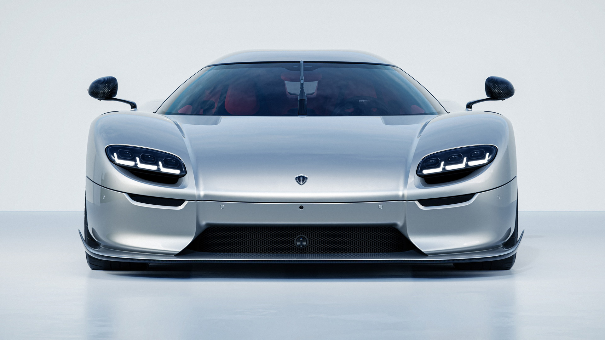

Koenigsegg
The CC850
The CC850 is the ideal combination of classic design and
cutting-edge technology, and is engineered to be the perfect
driver’s car.

The CC850 was just released on July 2nd 2022 in celebration of Christian Von Koenigsegg's 50th birthday. The car is insipired by the classic Koenigsegg CC8S which was the first car ever made by koenigsegg

What makes it so special?
This car is special not only because of its story and design, but also for its innovations in technology. The CC850 is the first car in history to have a transmission which can operate in full automatic mode, or act just like a conventional six-speed manual transmission complete with clutch pedal and gorgeous gated shifter. In addition, it was claimed that only 50 units will ever be made and will cost around 4 million dollars each, but after all 50 units were sold out after 5 days of its release, they plan to make 20 more units.
if you are interested in seeing the manual/automatic transmission, here is a video I recommend you watch